Mi nombre es Jesús Manuel Olivas
Me pueden encontrar en twitter como @jmolivas
En mi blog http://jmolivas.com
Mi nombre es Jesús Manuel Olivas
Me pueden encontrar en twitter como @jmolivas
En mi blog http://jmolivas.com
Relativamente nuevo en Drupal aproximadamente 2 años de experiencia trabajando con este framework.
Tengo ese mismo tiempo programando con PHP y con symfony2 en fechas recientes.
Próximamente :
@hechoendrupal
http://hechoendrupal.com
Display Suite permite controlar como los contenidos o campos de las entidades son desplegados utilizando una interfaz drag & drop. Sin la necesidad de crear o modificar archivos tpl.
Por defecto Display suite incluye vistas o modos predefinidos para mostrar los datos (Teaser, Full, RSS) llamados "View Modes". Modificando o agregando estos y asignando campos en las regiones, es que logramos controlar como las diferentes piezas de contenido o campos son mostradas en estos "View Modes" los cuales pueden ser consumudos por el modulo "Views"
http://drupal.org/project/ds
admin/structure/ds 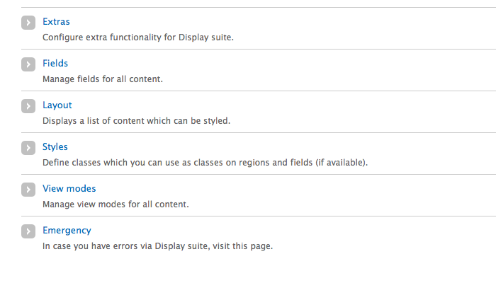
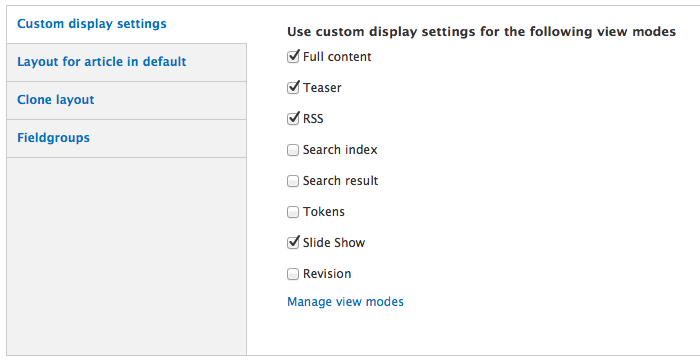
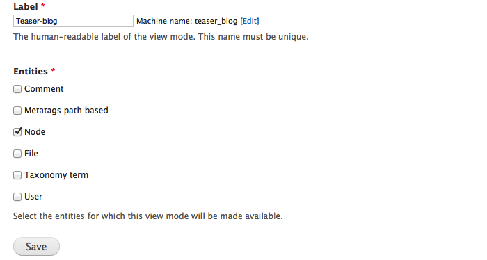
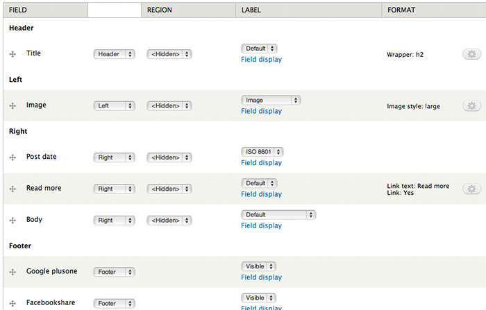
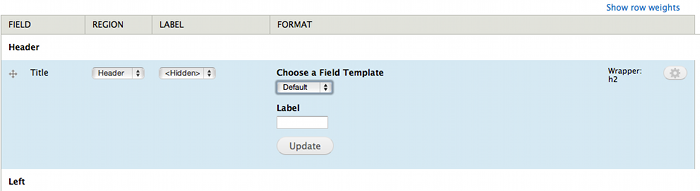
En esta pantalla es posible:
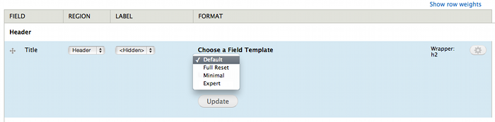
Definir salida HTML de campo:
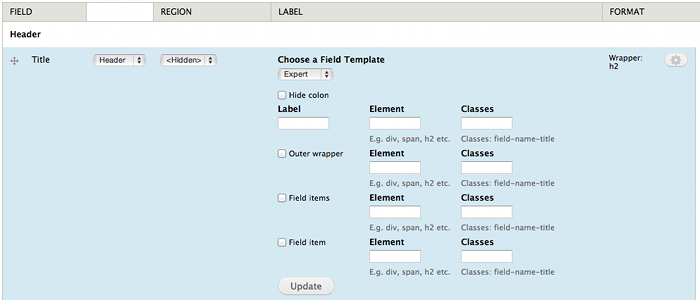
Permite establecer manualmente tipo de elemento y asignar clases para cada uno de los diferentes elementos HTML contenedores de el campo.
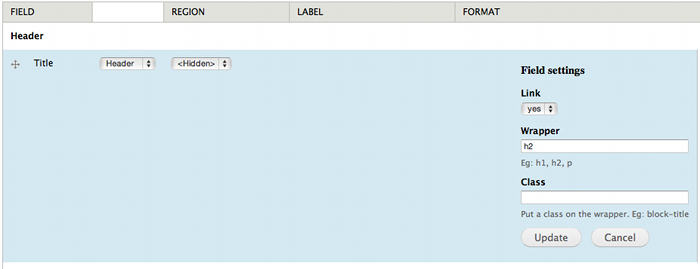
Permite establecer manualmente tipo de elemento y clases para campo.
Permite establecer caracterísiticas adicionales particulares por tipo de campo.
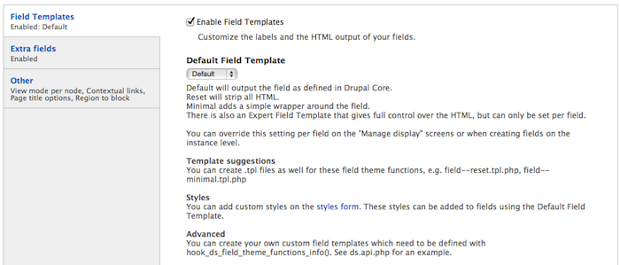
Activar opción de plantilla de campo y establecer la plantilla por defecto.
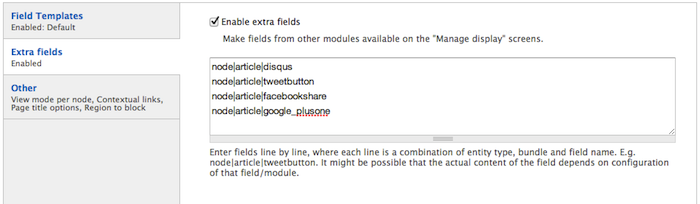
Agregar campos a mostrar en region de contenido campos que se generan por medio de otros modulos (disqus,tweetbutton,facebookshare,google_plusone).
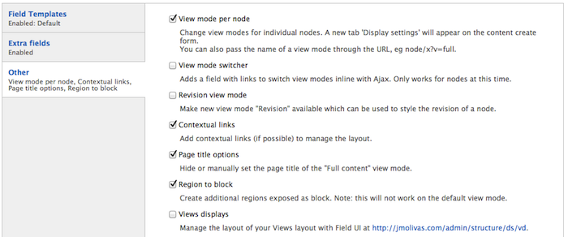
Asignar "View Mode" directamente a nivel de nodo, enlaces contextuales, opciones para titulo.
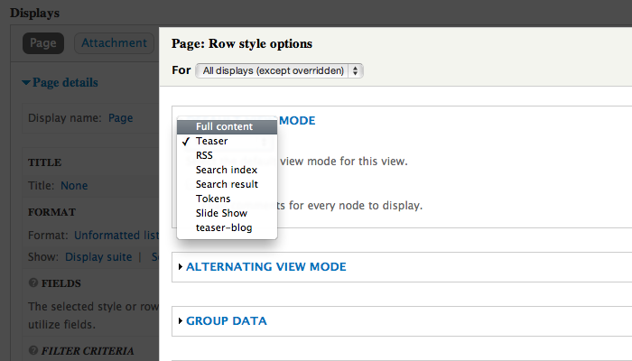
Slides hechas con kinout
kinout on github
Tipografías utlizadas Bitter & Open Sans
Open Sans en google webfont directory
Bitter en google webfont directory
Drupal Summit Latino, Guadalajara 2012
Jesús Manuel Olivas | @jmolivas | http://jmolivas.com